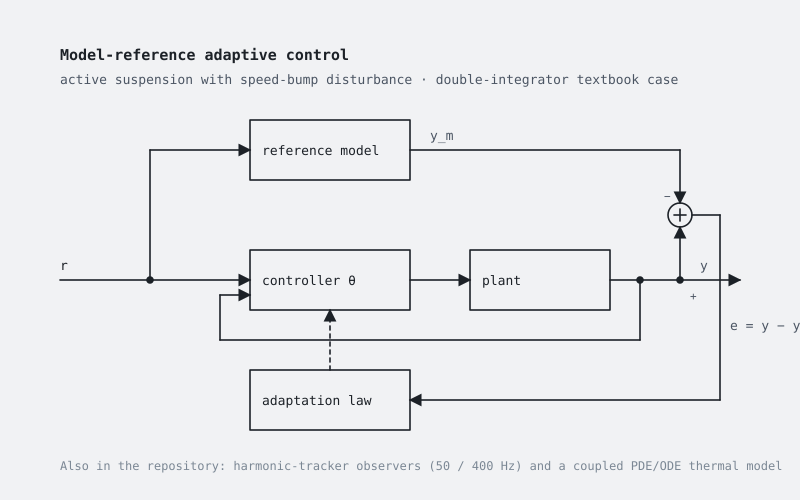

Adaptive control and estimation
Compact MATLAB/Simulink projects: model-reference adaptive control of an active suspension and of a textbook plant, harmonic-tracker analysis for grid signals, and a coupled PDE/ODE thermal model.

What it is
A set of small, self-contained projects on adaptive control and on related estimation problems. Each folder has an initialisation script that fills the workspace and, where present, a Simulink model to run afterwards; no external library is needed, apart from one small Simscape component compiled locally.
Continuous-time designs are discretised explicitly in the scripts (forward Euler or matrix exponential), so that the same gains can be reused in fixed-step Simulink blocks and, later, in C.
The projects
- Active suspension — MRAC of a single-mass (quarter-car style) active suspension with a speed-bump disturbance, a road-profile observer and a Kalman-filter variant.
- Textbook example — model-reference adaptive control of a double integrator with a reference model with prescribed poles, plus a state observer.
- Harmonic trackers — discrete-time design of resonant PI, SOGI, phase-shift filter, DDSRF-PLL and first-harmonic-tracker observers for 50 Hz and 400 Hz signals.
- PDE/ODE thermal model — explicit finite-difference simulation of a one-dimensional heat-conduction bar coupled with a lumped heater, as a control-oriented modelling exercise.